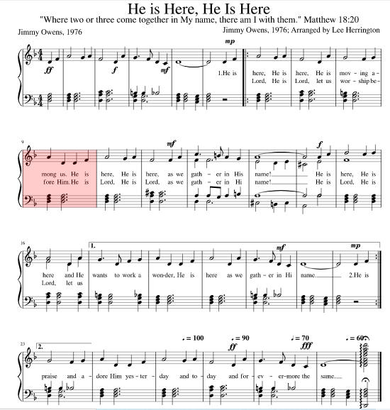

|
|
【主同在】 詩集：世紀頌讚，232 |
|
He is here, He is here. |
主同在，主同在，祂運行我們中間， |
|
 |
|
|
|
|
Owens, Jimmy
1930-
［詞，曲作者］
https://hymnary.org/person/Owens_J
敬拜的浪潮開始擴展之後，事情就有了改觀。
一九六零年代末期的靈恩更新運動，震動了美國主流派教會，使許多基督徒的信心再得建立。不只古老的聖詩開始了新意義，會眾也開始唱新歌。
在那些早期的新歌中，如蓋達兒（Dale Garratt）所作的「神掌王權」（Hallelujah,
for the Lord Our God Reigns），就深受世界各地的教會和靈恩團體所喜愛，使原籍紐西蘭的蓋達兒和其丈夫大衛，因此被視為當代讚美運動的先驅。
蓋達兒談到，她是在六零年代初的禱告中，開始一種獨特的敬拜方式，當時披頭族（Beatles）的世俗音樂正橫掃全球樂壇，他們的名聲傳遍全球，到處有人唱他們的歌曲；但是相對的，教會音樂則亟需更新！
到了七零年代初期，已有美國教會接受了新的敬拜方式。他們以伴隨著吉他、拍手、甚到舞蹈的讚美詩歌來代聖詩，而香港教會要到八零年代初才開始唱現代詩歌。
Texts by
Jimmy Owens (11)
Tunes by Jimmy Owens (9)
Carol Owens (1)
Jimmy Owens (3)
Jimmy and Carol Owens (2)
https://hymnary.org/text/god_forgave_my_sin_in_jesus_name
世紀頌讚 Jimmy Owens
-
-
-
-
“SERVANT SONG”
“For even the Son of man came not to be ministered unto, but to minister, and to
give his life a ransom for many” (Mk. 10:45)
INTRO.: A song which asks the Lord to help us to be like Him in ministering to
others is “Servant Song” or “Servant’s Song.” The original
text was written and the original tune was composed both by Jimmy Owens (b.
1930) and Carol Owens (b. 1931). Usually known as “Jimmy and Carol Owens,”
they are a husband and wife songwriting and author team who are pioneers
of Contemporary Christian Music. Jimmy and Carol have been married since 1954.
Their children are Jamie Owens Collins, a well-known recording artist,
songwriter, and speaker, and Buddy Owens, an author and a teacher at Saddleback
Church in Lake Forest, CA. Another song by Jimmy is
“Holy, Holy,” and another by Carol is
“Freely, Freely,” both from 1972.
Best known for the children’s album Ants’hillvania,
which was nominated for Best Album for Children in the Grammy Awards of 1981,
Jimmy and Carol received the Christian Artists’ Music
Achievement Award in 1986. They serve through the work of School of Music
Ministries International, which they founded in 1991. Jimmy was inducted into
the Mississippi Musicians Hall of Fame in 2001. Their God Songs: How to Write
and Select Songs for Worship, co-authored by Paul Baloche, was given the
WorshipMusic.com Book of the Year Award in 2005.
The Owenses’ original song, copyrighted in 1978 by Communique Music and entitled
either “Make Me a Servant” or “Make Me Like You,” appears to have been a single
stanza:
Lord, make me like You ,
Please make me like You.
You are a servant ,
Make me one too.
O Lord, I am willing
Do what You must do
To make me like You, Lord,
Just make me like You,
Whatever You do.
This was evidently altered later to a three stanza version:
Make me a servant, Lord, make me like You,
For You are a servant, make me one, too.
Make me a servant, do what You must do
To make me a servant, make me like You.
To love my brother, to serve like You do.
I humble my spirit, I bow before You.
And through my service, I’ll be just like You.
So make me a servant, make me like You.
Open my hands, Lord, and teach me to share;
Open my heart, Lord, and teach me to care.
For service to others is service to You.
Make me a servant, make me like You.
Around 2000, during a series of lessons on servanthood presented at the Spring
Creek Church of Christ in Plano, TX, a member of the congregation remembered
hearing a song called “Make Me a Servant” that his mother had sung to him in his
youth but that he had never seen in a hymnbook. Without their knowing the true
origin of the song, the lyrics of the single stanza were reworked by the local
preacher, Tim Jennings, who was born on August 19, 1967, in Las Cruces, New
Mexico. After graduating from Las Cruces High School in 1985, he attended
Florida College in Temple Terrace, Florida, graduating in 1987; New Mexico State
University in Las Cruces, New Mexico, graduating in 1990; and Texas Tech
University in Lubbock, Texas, graduating in 1993. On May 28, 1993, he married;
his wife’s name is Jennifer, and they have three children, sons Jack and Parker,
and daughter Kayla. Becoming a gospel preacher, Tim has worked with the Spring
Creek church from June, 1996, to the present. The music was arranged by one of
the elders, Richard Morrison (b. 1945). Morrison felt that the theme merited
fuller treatment, so he sought help from Matthew Bassford, who had been a member
of Spring Creek in his high school years and was later the local preacher with
the church of Christ in Joliet, IL, who quickly provided two more stanzas. This
version of the song has appeared in the 2007 Hymns for Worship Supplement edited
by R. J. Stevens et. al., where the tune is listed as “Traditional”; and the
2007 Sumphonia Hymnal Supplement and the 2012 Psalms, Hymns, and Spiritual Songs
both edited by Steve Wolfgang et. al. Other versions of the song have appeared,
one having the Owenses’ single first stanza labeled “Traditional” with music
arranged in 1995 by Darrell Bledsoe in the 2010 Praise Hymnal, and another with
that stanza and two additional stanzas written in 2009 by Jack Boyd in the 2010
Songs for Worship and Praise, both edited by Robert J. Taylor.
The song points out the importance of being a servant like Christ.
Stanza 1 tells who our example of being a servant is
Make me a servant, just like Your Son.
For He was a servant, Please make me one.
Make me a servant, do what You must do
To make me a servant, Make me like You.
The Bible teaches the importance of being a servant:: Matt. 10:24
Jesus Christ came to be a servant and thus is our example: 1 Pet. 2:21
In being servants, we are learning to be holy as God is holy: 1 Pet. 1:14-16
II. Stanza 2 tells us how to become a servant
Make me a servant, take all my pride,
For I would be lowly, humble inside.
Giving to others with all that I do
In love for my brother, Make me like You.
We must get rid of pride: Prov. 16:18
Instead, we must strive to be lowly and humble: 1 Pet. 5:5-6
And we must love one another: Jn. 13:34-35
III. Stanza 3 tells us the results of being a
servant
Make me a servant, filled by Your might,
And may all my labors shine with Your light.
Show me Your footsteps and what I should do;
For now and forever, Make me like You.
Those who are willing to be servants will be strengthened by God’s might: Eph.
3:16
They will also shine as lights in the world: Phil. 3:15
And they will dwell with the Lord both now and forever: Ps. 23:6
CONCL.:
The additional stanzas by Jack Boyd are as follows:
Take me and mold me, and make me like You;
For You are a servant, make me one too.
Light me the pathway that leads on to You.
Please make me a servant; make me like You.
Watch me and guide me, and make me like You;
For You are a servant, make me one too.
This is the prayer that I send up to You:
Please make me a servant; make me like You.
In doing research, I have found two other similar songs in the Contemporary
Christian Music repertoire, one beginning “Make me a servant, humble and meek”
from 1982 by Kelly Willard (b. 1956), and another beginning “Make me a servant
like You, dear Lord” (“Servant’s Heart”) from 1987 by Ron Hamilton (b. 1950).
The Owenses’ original song was addressed to Jesus, “Make me a servant, Lord,
make me like You.” Jennings changed the object of the request from Jesus to the
Father, “Make me a servant, just like Your Son,” because of some disagreement in
the congregation about whether it is scriptural to sing songs addressed directly
to Jesus. If we want to be like Jesus, we must follow the instructions of the
“Servant Song.”
https://hymnstudiesblog.wordpress.com/2019/08/09/servant-song/